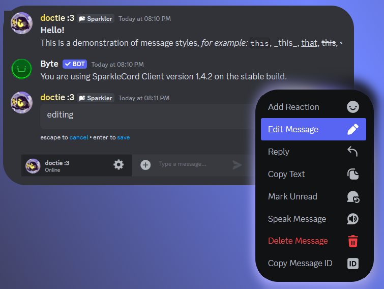

INTRODUCING SPARKLECORD
An open-source chat application, with way more features than you could count.

Feature-packed
There are way too many features to count...
Lightning Fast n' Tiny
Optimization is not DLC, it is a core feature. SparkleCord will always run on any device that can browse the web!
Open Source
You can customize almost every portion of SparkleCord.